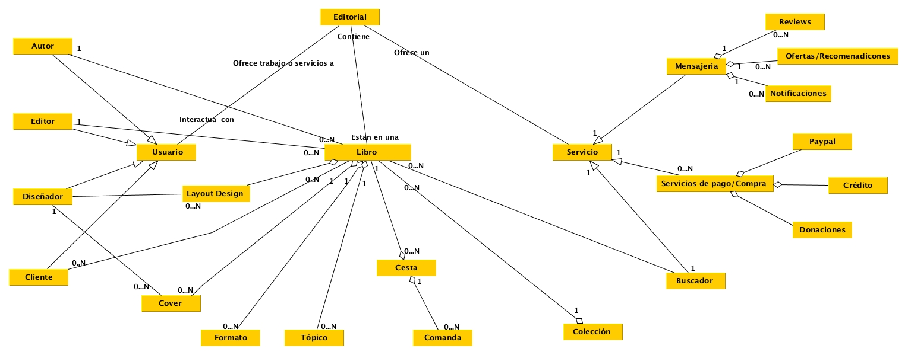
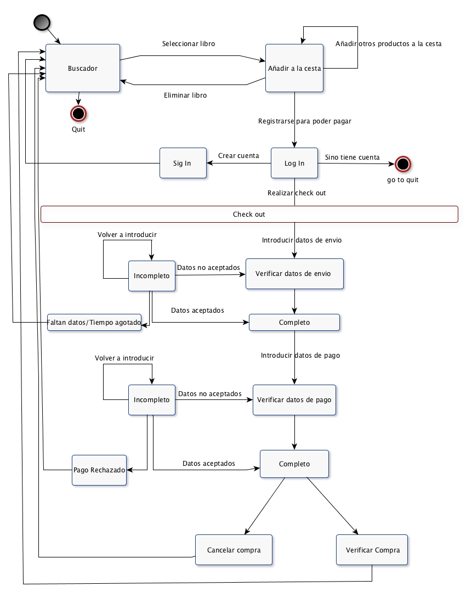
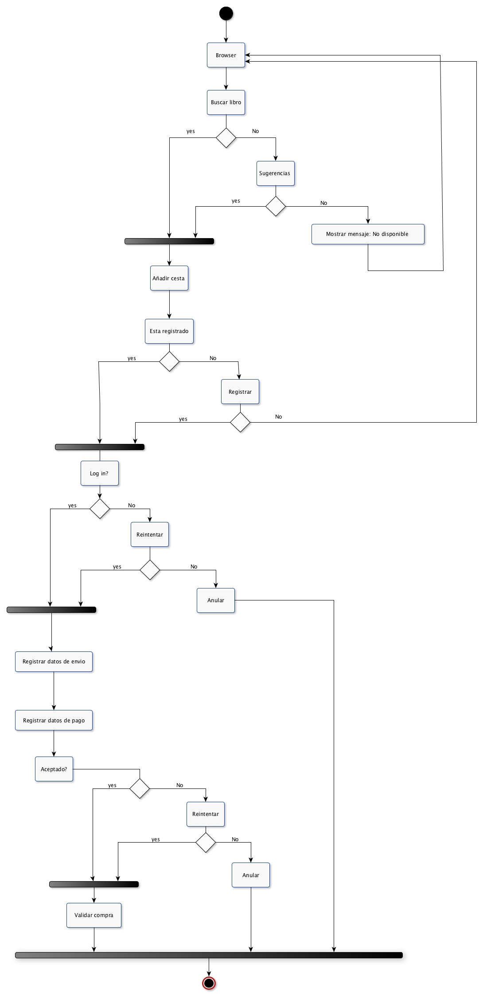
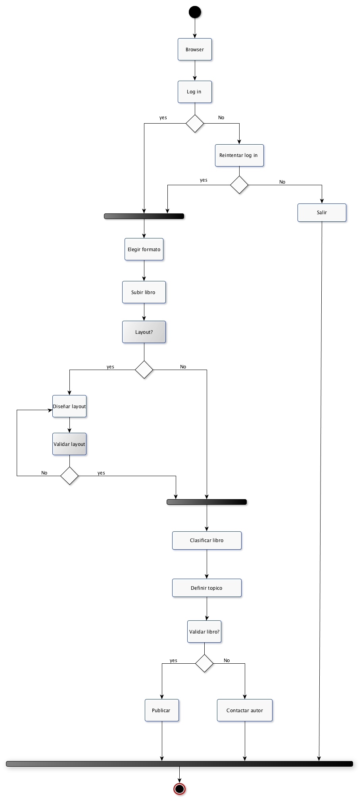

Domain Requirements
Glossary
- Editorial: compañia que utilizar el software para gestionar sus servicios.
- Cliente:quien interactua con la pagina.
- Ourcode:nosotros como desarrolladores.
- Editores: clasifica los trabajos y escoger donde deben de ser incluidos dentro de las colecciones de la editorial
- Layout: presentacion fisica de los trabajos, covers, diseño, logotipo.
- Layout designers: estos diseñadores se encargan de pasar los trabajos a un formato estandard de la editorial.
- Editorial collection:
- Watermark:consiste en la imagen y logotipo colocado por encima de la version online, para incentivar a los clientes a comprar los trabajos.
- Cover page: es la primera pagina del libro, la tapa, las cuales tienen que tener el mismo formato.
- Autor: escribe y sube sus trabajos a la pagina web.
- Reviews: comentarios o reseñas que pueden dejar los clientes sobre un cierto titulo o coleccion.
- Online payment service: servicio contratado para el pago y donaciones en la pagina web.
- Messenger services: servicio de mensajeria contratado para proveer de sistema de notificaciones, publicidad y recomendaciones
- Donations: la editorial incentiva las donaciones a los autores de esos trabajos que estan disponibles para lectura online, sin que la editoral tenga comisiones.
- Notifications: comunicados via email, de recibos de ventas, actualizaciones de sagas, recomendaciones, informacion de autores suscritos...etc
- Unlisting: accion de remover del catalogo alguno de los libros disponibles. Esta accion la pueden llevar a cabo tanto los autores como los editores.
- PayPal: Servicio externo para procesos de compra con tarjetas bancarias.
- Stakeholder: alguien relevante en el sistema, sus acciones y decisiones son importantes para el comportamiento general.
- Use case: servicio ofrecido por el sistema.
- Actor: una persona/sistema externo que inicializa un use case.
- Changes: cambios posibles a realizar en el diseño.
- Libro: entidad libro, define titulo, formato, topico, coleccion, cover.
- Usuario: entidad que tiene un nombre, una actividad dentro de la editorial.
- Cesta: una cesta puede contener N libros.
- Servicio: entidad en la que se definen los servicios y caracteristicas de estos.
Static Analysis Diagram

Domain requirements
- Processes:
- - El cliente puede escoger que version desea del libro.
- - El autor puede escoger el formato y pedir un layout.
- - El cliente puede realizar una compra y optar porque servicio de pago le es mas comodo.
- - El cliente puede usar el buscador o la clasificacion por coleccion para buscar un libro.
- - El cliente puede escoger de que libros/colecciones recibe notificacion.
- - El cliente puede dejar reviews o valoraciones de los libros que lee.
- - El cliente puede hacer o no donaciones.
- - El editor puede quitar la disponibilidad de un libro. (unlist)
- Changes:
- - Definir que se notifica al usuario y que no.
- - Que un autor sea capaz de participar en la clasificacion y diseño del libro.
- - Que no haya un minimo de pago.
- Restrictions:
- - Solo puede validar un libro un editor.
- - Los topicos y colecciones son seleccionadas especificamente por el editor.
- - Hay un maximo de items que se pueden añadir a la cesta?
- - Hay un precio minimo por compra o donacion, o precio maximo?
- - Solo se puede acceder a los servicios web de la editorial teniendo una cuanta.
- - Se puede editar una cover una vez ya ha sido seleccionada por un diseñador.
- - Se reciben notificaciones de respuestas a reviews?
- - Puede el autor opinar en la eleccion de la clasificacion y cover del libro?
- Formulas:
- - Formula para calcular el precio de los libros.
- - Formula para calcular el precio de libro y envio.
- - Formula para calcular la media de reviews y definir la popularidad del libro.
State Diagram

Activity diagram: Purchasing a book.

Activity diagram: Publishing a book.

Non-functional requirements
Product
Usabilidad
- Menú debe estar ubicado en la izquierda. (Estándar de la mayoría de páginas web)
Eficiencia
- Que el proceso de compra no dure más de x tiempo.
- Que el tiempo de respuesta de una búsqueda no sea muy largo.
- La página se debe refrescar automáticamente cada cierto tiempo para actualizar información.
Robustness
- Cuantas veces se puede realizar un login antes de bloquear la cuenta
- Cuanto tiempo se puede durar realizando la compra.
Organizational
- Solo se acepta un formato específico de libros.
- Los clientes solo podrán realizar review estando registrados.
- Los autores y editores no pueden manipular libros disponibles. (unlisting)
- Solo se pueden realizar donaciones estando registrado.
- Un libro solo se puede subir una vez ha sido validado por el editor.
External
- Posibilidad de acceder desde smartphone.
- La posibilidad de responder review de otros usuarios.
- Idiomas oficiales y co-oficiales donde tenga actividad la empresa.